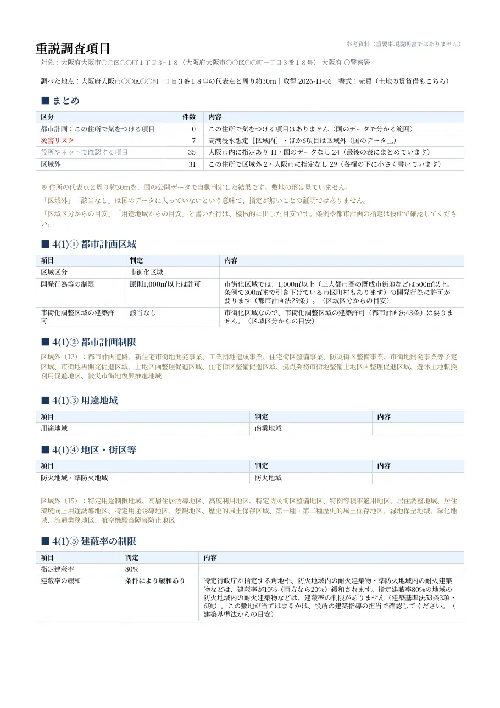
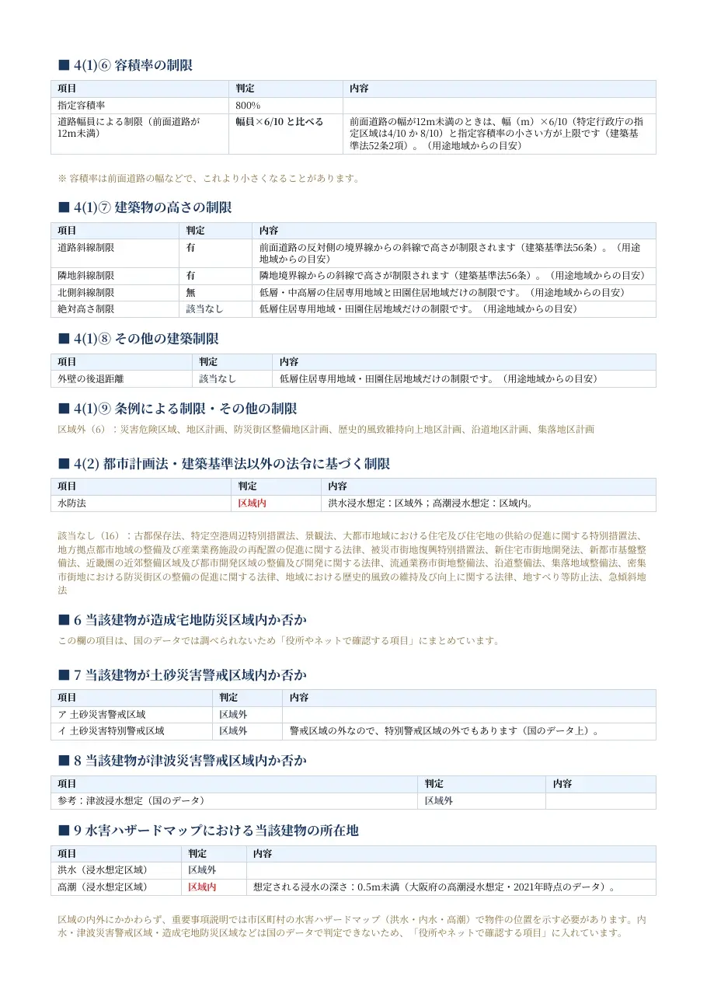
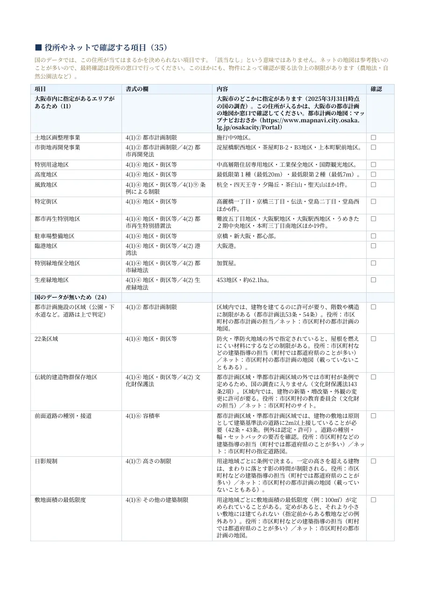
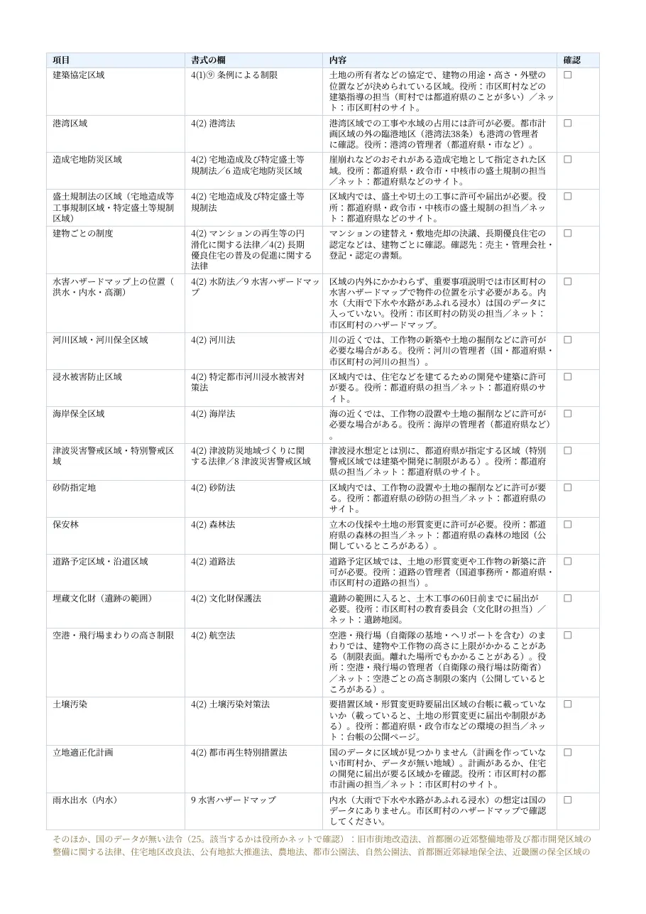

漫画で見る

売買でも賃貸でも、重要事項説明のために調べる項目を住所から判定。「調べないといけない項目」と「調べなくてもいい項目」が数秒で分かります。
調べ漏れが怖いから、調べる項目を先に仕分け。
都市計画・建ぺい率／容積率・防火指定・災害リスクを、住所から自動でチェック。重要事項説明の前に「調べないといけない項目」と「調べなくてもいい項目」を仕分けます。

重要事項説明の準備で毎回調べる項目を、重要事項説明書の項目の順に並べます。
Sonaure で実際に出力した PDF です（全5ページ）。重要事項説明書の項目の順（4(1)①〜⑨・4(2)・6〜9）に、判定と内容を載せます。
見本の町名・番地は伏せています。本書は参考情報で、宅地建物取引業法に基づく重要事項説明書ではありません。最終確認は行政窓口・現地で行ってください。


